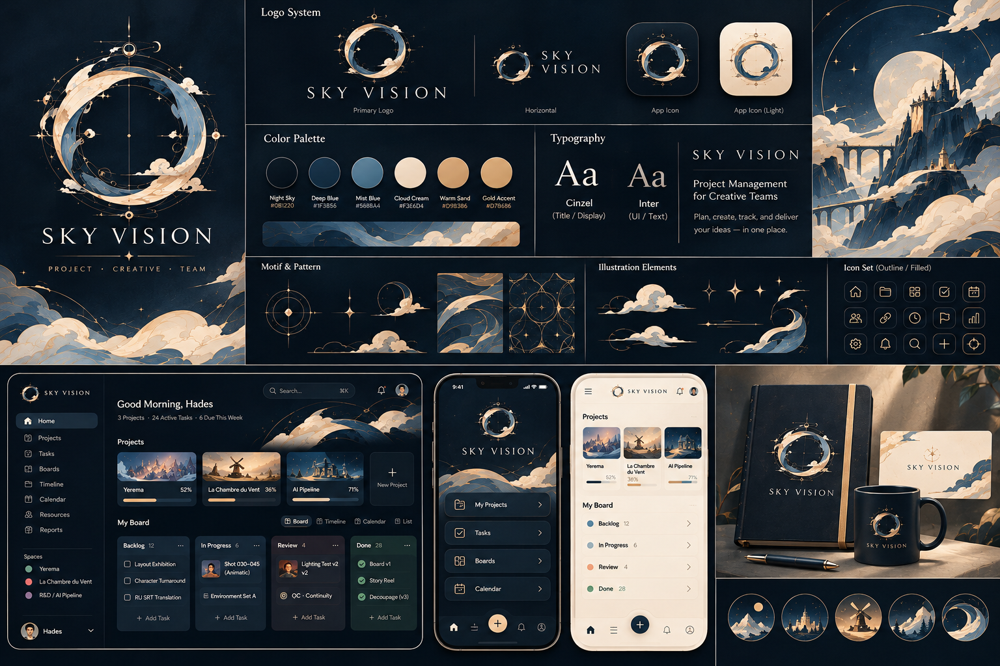
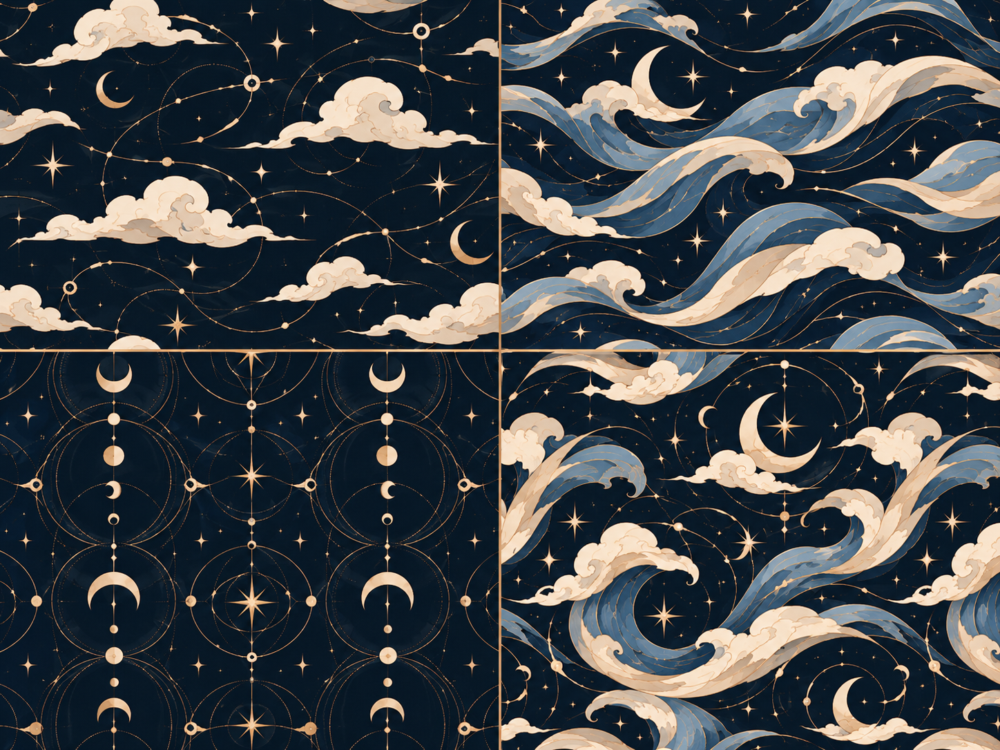
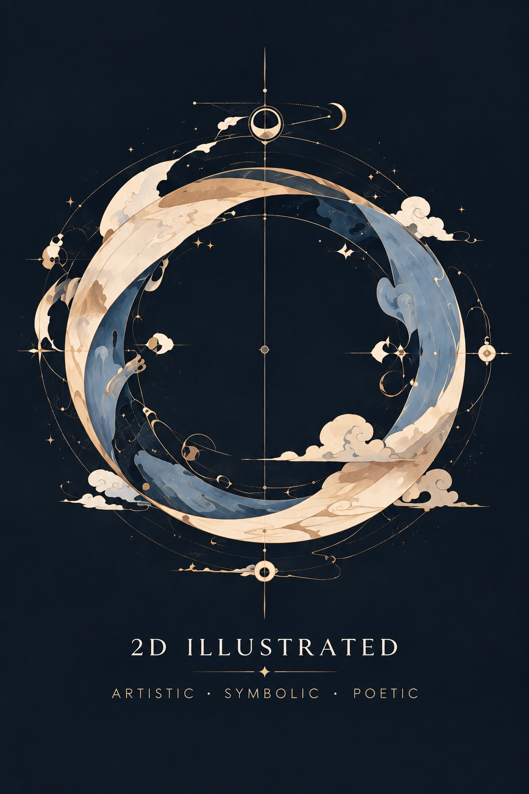
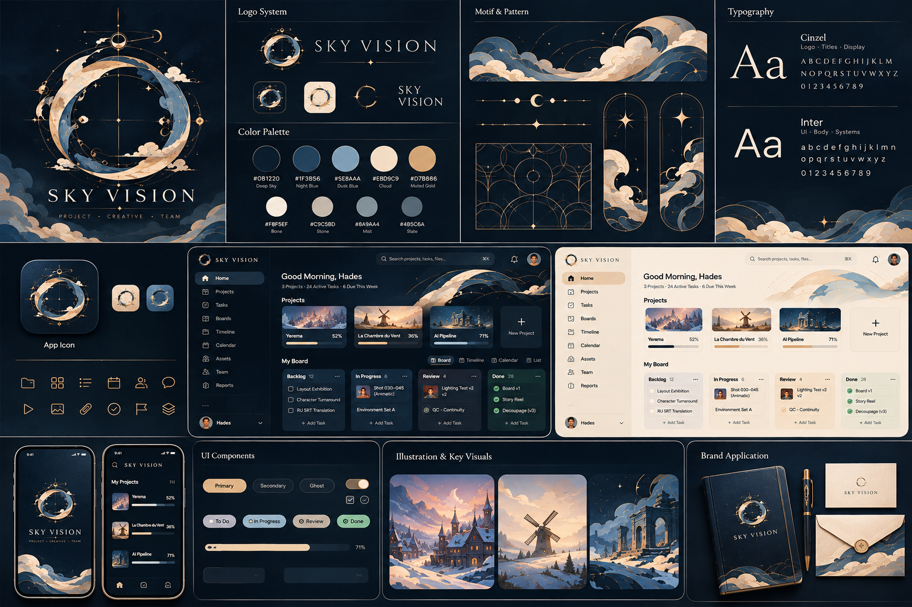

Positioning
Creative project management with an editorial soul: calm, exact, and made for momentum.
1Clarity before decoration
2Atmosphere with restraint
3Every state stays legible
Sky Vision turns creative direction into a clear, searchable system — from the quiet logic of the palette to the practical rhythm of project work.
One source of truth for identity, visual language, product UI, and production-ready assets. Built for teams that want atmosphere without losing clarity.
تعریف مشترک برای طراحی، محتوا و محصول
Creative project management with an editorial soul: calm, exact, and made for momentum.
Use the visual vocabulary as a system, not a collage.
orbit · مدارwave · موجmoon · هلالcloud · ابرstar · ستارهWarm, precise, poetic only where it helps. Product controls remain direct.
Tokens ready for product and campaign surfaces
Dark and light are two expressions of one system.
Persian fallback: Vazirmatn or system sans. Never use decorative display type for task controls.
مرجعها، خروجیها و وضعیت استفاده




Generated outputs are marked as generated. Attached LUNARA and ORBITRA explorations are references only; they are not canonical Sky Vision assets.
11 attached references · 2 generated drafts
Image-optional by design — illustration can step back when work needs focus
قواعدی که کیفیت را قابل تکرار میکنند
Keep negative space. Use gold as a small signal. Pair poetic imagery with plain language. Preserve no-image workflows.
No heavy glow, no illegible gold text, no ornamental borders around tables, no decorative control pretending to be functional.
proposedworkingneeds approval
Canonical changes require an ADR with from → to, reason, migration and rollback.